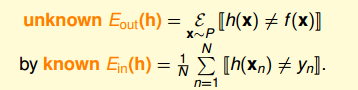

# Learning is Impossible
首先，考慮這樣一個例子，如下圖所示，有 3 個 label 為 - 1 的九宮格和 3 個 label 為 + 1 的九宮格。根據這 6 個樣本，提取相應 label 下的特徵，預測右邊九宮格是屬於 - 1 還是 + 1？結果是，如果依據對稱性，我們會把它歸為 + 1；如果依據九宮格左上角是否是黑色，我們會把它歸為 - 1。除此之外，還有根據其它不同特徵進行分類，得到不同結果的情況。而且，這些分類結果貌似都是正確合理的，因為對於 6 個訓練樣本來說，我們選擇的模型都有很好的分類效果。

再來看一個比較數學化的二分類例子，輸入特徵 x 是二進位的、三維的，對應有 8 種輸入，其中訓練樣本 D 有 5 個。那麼，根據訓練樣本對應的輸出 y，假設有 8 個 hypothesis，這 8 個 hypothesis 在 D 上，對 5 個訓練樣本的分類效果效果都完全正確。但是在另外 3 個測試資料上，不同的 hypothesis 表現有好有壞。在已知數據 D 上，；但是在 D 以外的未知數據上， 不一定成立。而機器學習目的，恰恰是希望我們選擇的模型能在未知數據上的預測與真實結果是一致的，而不是在已知的資料集 D 上尋求最佳效果。
這個例子告訴我們，我們想要在 D 以外的資料中更接近目標函數似乎是做不到的，只能保證對 D 有很好的分類結果。機器學習的這種特性被稱為沒有免費午餐（ No Free Lunch ）定理。 NFL 定理表明沒有一個學習演算法可以在任何領域總是產生最準確的學習器。不管採用何種學習演算法，至少存在一個目標函數，能夠使得隨機猜測演算法是更好的演算法。平常所說的一個學習演算法比另一個演算法更優越，效果更好，只是針對特定的問題，特定的先驗資訊，資料的分佈，訓練樣本的數目，代價或獎勵函數等。從這個例子來看， NFL 說明了無法保證一個機器學習演算法在 D 以外的資料集上一定能分類或預測正確，除非加上一些假設條件，我們以後會介紹。
# Probability to the Rescue
從上一節得出的結論是：在訓練集 D 以外的樣本上，機器學習的模型是很難，似乎做不到正確預測或分類的。那是否有一些工具或者方法能夠對未知的目標函數 f 做一些推論，讓我們的機器學習模型能夠變得有用呢？
如果有一個裝有很多（數量很大數不過來）橙色球和綠色球的罐子，我們能不能推斷橙色球的比例 u？統計學上的做法是，從罐子中隨機取出 N 個球，作為樣本，計算這 N 個球中橙色球的比例 v，那麼就估計出罐子中橙色球的比例約為 v。
# Connection to Learning
下面，我們將罐子的內容對應到機器學習的概念上來。機器學習中 hypothesis 與目標函數相等的可能性，類比於罐子中橙色球的概率問題；罐子裡的一顆顆彈珠類比於機器學習樣本空間的 x；橙色的彈珠類比於 與 f 不相等；綠色的彈珠類比於 與 f 相等；從罐子中抽取的 N 個球類比於機器學習的訓練樣本 D，且這兩種抽樣的樣本與總體樣本之間都是獨立同分佈的。所以呢，如果樣本 N 夠大，且是獨立同分佈的，那麼，從樣本中 的概率就能推導在抽樣樣本外的所有樣本中 的概率是多少。

映射中最關鍵的點是講抽樣中橙球的概率理解為樣本資料集 D 上 錯誤的概率，以此推算出在所有資料上 錯誤的概率，這也是機器學習能夠工作的本質，即我們為啥在採樣資料上得到了一個假設，就可以推到全域呢？因為兩者的錯誤率是 PAC 的，只要我們保證前者小，後者也就小了。

這裡我們引入兩個值 和。 表示在抽樣樣本中， 與 不相等的概率； 表示實際所有樣本中， 與 不相等的概率是多少。
# Connection to Real Learning

也就是說，不同的資料集，對於不同的 hypothesis ，有可能成為 Bad Data。只要 在某個 hypothesis 上是 Bad Data，那麼 就是 Bad Data。只有當 在所有的 hypothesis 上都是好的資料，才說明 不是 Bad Data，可以自由選擇演算法 A 進行建模。那麼，根據 Hoeffding’s inequality ，Bad Data 的上界可以表示為連級（ union bound ）的形式：
其中，M 是 hypothesis 的個數，N 是樣本 D 的數量， 是參數。該 union bound 表明，當 M 有限，且 N 足夠大的時候，Bad Data 出現的概率就更低了，即能保證 D 對於所有的 h 都有，滿足 PAC，演算法 A 的選擇不受限制。那麼滿足這種 union bound 的情況，我們就可以和之前一樣，選取一個合理的演算法（PLA/pocket），選擇使 最小的 作為矩 g，一般能夠保證，即有不錯的泛化能力。
所以，如果 hypothesis 的個數 M 是有限的，N 足夠大，那麼通過演算法 A 任意選擇一個矩 g，都有 成立；同時，如果找到一個矩 g，使，PAC 就能保證。至此，就證明了機器學習是可行的。
但是，如上面的學習流程圖右下角所示，如果 M 是無數個，例如之前介紹的 PLA 直線有無數條，是否這些推論就不成立了呢？是否機器就不能進行學習呢？這些內容和問題，我們下節課再介紹。
# Conclusion
本節課主要介紹了機器學習的可行性。首先引入 NFL 定理，說明機器學習無法找到一個矩 g 能夠完全和目標函數 f 一樣。接著介紹了可以採用一些統計上的假設，例如 Hoeffding 不等式，建立 和 的聯繫，證明對於某個 h，當 N 足夠大的時候， 和 是 PAC 的。最後，對於 h 個數很多的情況，只要有 h 個數 M 是有限的，且 N 足夠大，就能保證，證明機器學習是可行的。